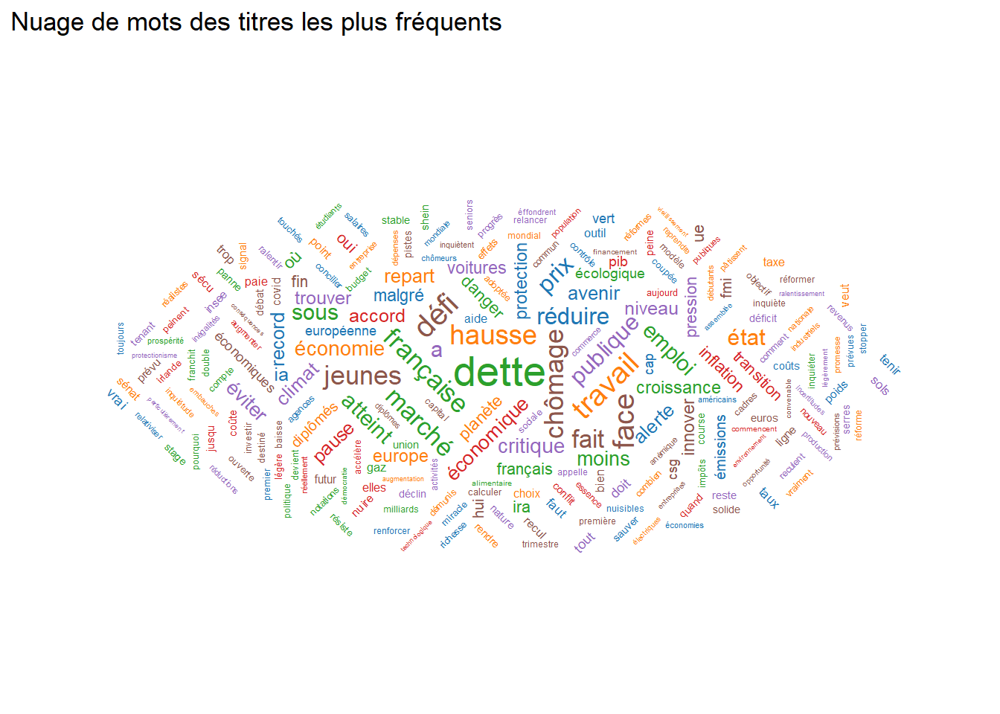

synthese
Code
library(readr)
library(dplyr)
library(stringr)
library(jsonlite)
library(tidytext)
library(ggplot2)
library(ggwordcloud)
library(stopwords)
library(tidyr)
# --- Lecture fichier ---
raw_lines <- readLines("questions_titres.csv", encoding = "Latin1")
raw_lines <- iconv(raw_lines, from = "Latin1", to = "UTF-8")
tmp_file <- tempfile(fileext = ".csv")
writeLines(raw_lines, tmp_file)
df <- read_csv(tmp_file, show_col_types = FALSE)
# --- Nettoyage TITRES COMPLETS (df) ---
df <- df %>%
rename(Titre = Titre_simplifie) %>%
mutate(
Titre = str_trim(Titre),
# Normalisation des apostrophes (toutes -> ')
Titre = str_replace_all(Titre, "’", "'"),
Titre = str_replace_all(Titre, "‘", "'"),
Titre = str_replace_all(Titre, "´", "'"),
Titre = str_replace_all(Titre, "`", "'"),
Titre = str_replace_all(Titre, "ˊ", "'"),
Titre = str_replace_all(Titre, "ˋ", "'"),
# Suppression des caractères de contrôle (dont \u0092)
Titre = str_replace_all(Titre, "[[:cntrl:]]", ""),
# Normalisation espaces
Titre = str_squish(Titre)
) %>%
filter(!is.na(Titre), Titre != "") %>%
arrange(Titre)
# --- Injection JSON dans la page HTML ---
cat(sprintf("<script>const titres = %s;</script>",
toJSON(df, dataframe = "rows", pretty = TRUE)))Code
###########################################################
# TOKENISATION + NETTOYAGE DES MOTS #
###########################################################
# Tokenisation regex — conserve les apostrophes
mots <- df %>%
unnest_tokens(
word,
Titre,
token = "regex",
pattern = "[^\\p{L}']+" # ON GARDE LETTRES + APOSTROPHE
)
# Séparation des élisions françaises
mots <- mots %>%
mutate(
word = str_replace(word, "^([ldncsjtmq])'(.*)$", "\\1' \\2")
) %>%
separate_rows(word, sep = " ")
# Listes de mots à supprimer
particles <- c("l", "d", "j", "t", "c", "s", "n", "m", "qu")
artefacts <- c("eme", "ème", "ere", "ère")
stopwords_fr <- stopwords(language = "fr", source = "snowball")
stopwords_perso <- c("cest","plus","sans","faire","france","etre","peut","le","la")
# Nettoyage final
mots_clean <- mots %>%
filter(
!word %in% particles,
!word %in% artefacts,
!word %in% stopwords_fr,
!word %in% stopwords_perso,
str_detect(word, "^[\\p{L}']+$") # lettres + apostrophes
)
# Calcul fréquence
freq <- mots_clean %>%
count(word, sort = TRUE) %>%
slice_max(n, n = 50)
###########################################################
# NUAGE #
###########################################################
set.seed(123)
print(
ggplot(freq, aes(
label = word,
size = n,
color = factor(sample(1:6, nrow(freq), replace = TRUE)),
angle = sample(c(0, 45, 90, -45), nrow(freq), replace = TRUE)
)) +
geom_text_wordcloud(area_corr = TRUE) +
scale_size(range = c(4, 15)) +
scale_color_manual(values = c("#1F77B4","#FF7F0E","#2CA02C","#D62728","#9467BD","#8C564B")) +
theme_minimal() +
theme(
axis.text = element_blank(),
axis.title = element_blank(),
panel.grid = element_blank()
) +
ggtitle("Titres les plus fréquents")
)